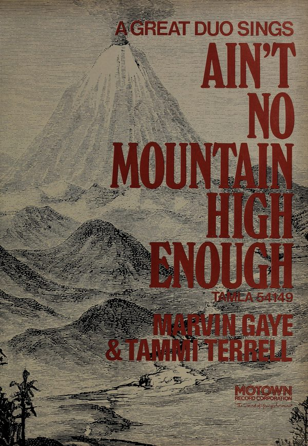

Ain't No Mountain High Enough was the first duet by Marvin Gaye and Tammi Terrell, released by Tamla on April 20, 1967.
Nickolas Ashford and Valerie Simpson wrote it, and the two singers cut their vocals separately.
It stopped at No. 19 on the Hot 100, yet it became the signature record of Motown's best-loved duo.

Table of Contents
- Who Wrote the Song?
- Why Were the Vocals Cut Apart?
- A No. 19 Hit, Then Tragedy
- Who Else Recorded It?
- FAQ
Who Wrote the Song?
Nickolas Ashford and Valerie Simpson wrote it in New York in 1966, before either worked for Motown.
With Jo Armstead they had already written "Let's Go Get Stoned," a 1966 hit for Ray Charles.
The title line came to Ashford on a walk through Manhattan.
uDiscover Music reads the mountains as the city's skyscrapers, everything standing between a young writer and success.
The Golden Egg
Dusty Springfield heard the song and wanted it.
The writers said no, because they saw it as their "golden egg," the record that would get them into Motown.
It worked: Motown signed them.
Why Were the Vocals Cut Apart?
Producers Harvey Fuqua and Johnny Bristol started work in December 1966 at Hitsville U.S.A.'s Studio A in Detroit.
The session wrapped on February 1, 1967.
The Funk Brothers laid down the rhythm track first, and the horns went on second, drummer Uriel Jones told Mojo in 2009.
That rattle in the intro is Jones hitting the metal rim of his snare, according to arranger Paul Riser.
Tammi First, Marvin Second
Terrell sang alone with the producers, and the duet idea came later, Riser recalled.
"After Tammi recorded her vocal, the producers decided the single would be stronger as a duet," he said.
Gaye was fresh off "It Takes Two" with Kim Weston, so Fuqua and Bristol brought him in.
"He overdubbed his vocal so it wrapped around hers," Riser said.
Motown later remixed the track and stripped out the background voices, leaving the two leads in front.
Gaye's Third Partner
Terrell followed Mary Wells and Kim Weston as Gaye's duet partner.
A Philadelphia singer from James Brown's revue, she signed with Motown on her 20th birthday in 1965.
"I had no idea Tammi was as good a singer as she turned out to be," Gaye admitted.
A No. 19 Hit, Then Tragedy
Tamla released the single on April 20, 1967, with "Give a Little Love" on the B-side.
Billboard's review called it "another pulsating fast smash for Gaye with his new partner Tammi Terrell."
| Chart | Peak |
|---|---|
| Billboard Hot 100 (US) | 19 |
| Billboard R&B (US) | 3 |
| United album, Billboard 200 | 69 |
| United album, R&B Albums | 7 |
The single opened the duo's album United, issued on August 29, 1967.
It also opened a run of Ashford and Simpson duets that charted higher:
- "Your Precious Love," No. 5, 1967
- "Ain't Nothing Like the Real Thing," No. 8, 1968
- "You're All I Need to Get By," No. 7, 1968
You can hear where it sits in our 1967 music year guide.
Collapse in Virginia
On October 14, 1967, Terrell collapsed into Gaye's arms on stage at Hampden-Sydney College in Virginia.
Doctors found a malignant brain tumor, and she died on March 16, 1970, aged 24.
Her loss sent Gaye into the grief our Marvin Gaye biography traces, and his 1968 smash "I Heard It Through the Grapevine" felt hollow to him.
Who Else Recorded Ain't No Mountain High Enough?
In 1968 Diana Ross and Dennis Edwards sang it on the album Diana Ross & the Supremes Join the Temptations.
Two years later Ashford and Simpson produced a solo remake for Ross, stretched past six minutes with spoken verses.
It topped the Hot 100 for three weeks in 1970, her first No. 1 after leaving the Supremes.
The original kept finding new audiences:
- Stepmom, 1998
- Remember the Titans, 2000
- Guardians of the Galaxy, 2014: it plays in the closing scene, and the soundtrack went to No. 1
- Amy Winehouse, "Tears Dry on Their Own," 2007: built on the duet's backing track, with Ashford and Simpson credited
Honors
The recording entered the Grammy Hall of Fame in 1999.
Wikipedia lists it as seven times platinum in the US, streams included.
FAQ
Who sang it first, Marvin Gaye or Diana Ross?
Marvin Gaye and Tammi Terrell had the original, released in April 1967.
Diana Ross recorded it with the Supremes and Temptations in 1968, then cut her solo version in 1970.
Who wrote the song?
Nickolas Ashford and Valerie Simpson wrote it in 1966, before they joined Motown.
Did Marvin Gaye and Tammi Terrell record it together?
No.
Terrell sang her part first, and Gaye overdubbed his vocal later.
Was Diana Ross's version a No. 1 hit?
Yes.
Her 1970 single topped the Billboard Hot 100 for three weeks and was her first solo No. 1.
Our Motown and soul guide covers the label behind the duo, and the Billboard chart archive lists every Gaye hit.
Wait for that snare-rim rattle, then Terrell's first line, and you'll hear why Ain't No Mountain High Enough still sounds like a promise nobody could break.